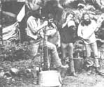

Marc Bristol and other Washington State grassroots musicians wail away on a gutbucket, washboard, and jug (the axe is a gag). For Marc's original homegrown music column-which featured gutbucket, washboard, jug, kazoo, musical saw, and spoons "makin' and playin' "instructions-see MOTHER NO. 50. Inset shows gutbucket "notch and bevel" details.
Even homesteaders need to relax and enjoy themselves from time to time, right? And almost everybody these days wants to cut his or her cost of living. So how about a little do-it-yourself entertainment?
And that's what this column is all about. Down-home music that you can make ... and the instruments (which, in some cases, you can also make!) to play that music on.
We may also publish some songs, discuss music as a potential home business, run discographies, bibliographies, and/or include whatever other do-it-yourself music topics you'd like to see.
The important thing is that this is a new column. If you like it, write to me and let me know. If you have some ideas for this feature, let me know that. I'm open to any suggestions or information you care to contribute. I'll even try to answer your questions about down-home music ... but-both for the benefit of all MOTHER's readers and to ease my correspondence load-I'll deal with those questions, whenever possible, here in this column ... rather than in personal letters.
Address your correspondence for this column and this column only-to Marc Bristol, 31722 N.E. 180th Place, Duvall, Wash. 98019.
You say you need some new strings for your guitar- or maybe want to put some winter evenings into buildin' a kit banjo-but the nearest music store Is 50 miles down the road and the snow's so deep that you can't get your pickup out of the barn anyway? Well, don't despair, 'cause I'm going to tell you how you can have those goodies-as well as a whole slow of other musical Items-delivered right to your mailbox ... and for less money than you would have spent In that store In town, toot
There are, you see, a goodly number of mail-order musical merchandisers around the United States, and-since these outfits aren't supporting storefronts In the high-rent district (and because many of the mail-order outlets deal in volume) -they usually offer discounts of up to 50% on most everything but quality handmade instruments.
I've prepared a list of a few reputable mail-order merchants, and -for comparison-I'll Include sample prices wherever possible. So, get out a paper and pencil, and let the postman do the walkin' I
Ell. INSTRUMENTS (Dept. TMEN, 541 East Grand River, East Lansing, Michigan 48823) offers about the most extensive acoustic stringed Instrument catalog that I know of. And, the Elderly folks have spiced their booklet up with solid Information on how to mount a skin head on a banjo, find Instrument building materials, or order publications that deal with folk music.
Of course, the catalog also lists such things as harmonicas, recorders, kallmhas (the African thumb pianos), and so forth. In addition, Elderly sells instructional and entertaining books and records (most of the records from companies mentioned In my last column are available through this catalog), and parts and tools for the instrument builder. Here are some sample prices: D'Merle bronze-wound guitar strings: $3.65 per set.
Hohner Marine Band Harmonic (all keys available) 1896 model: $5.05 apiece.
Minimum order: $5.00 (there's a $1.00 shipping charge for orders under $10).
GUITAR'S FRIEND (Dept. TMEN, Route 1, Box 541, Sandpoint, Idaho 83864) offers an instrument catalog which Is similar to Elderly's ... though the booklet put out by Guitar's Friend will cost you $3.65. Handmade Instruments seem to be the first love of these people and-as such-are the subject of a brochure that Is included with the price list. I haven't seen Guitar's Friend's newest catalog yet, but I hope that the artwork in it is up to the downright inspirational level of their past artistic efforts.
D'Merle bronze-wound guitar strings: $4.10 per set.
Hohner Marine Band (all keys) 1896 model: $5.25 apiece.
No minimum order (although the shipping charge is $1.25 for any orders under $10).
MUSICIAN'S SUPPLY (Dept. TMEN, P.O. Box 1440, El Cajon, California 92020) provides mail-order discounts on electric guitars, basses, amps, special effects devices, microphones, and such. This outfit also carries some acoustic
guitars and banjos, replacement parts, accessories, harmonicas, books, and a few (mostly educational) records, although their emphasis is on guitars.
And, while most of the companies listed here offer rapid service, Musician's Supply claims that they ship all orders on the same day that they're received. (I've ordered from three of the companies mentioned In this column and always received my merchandise in less than two weeks. Of course, If you need something for a gig tomorrow night, you're still stuck with a trip to the music store, but-with just a little planning ahead - you can mail order and get a better deal!) Here are some prices from Musician's Supply:
D'Merle bronze-wound guitar strings: $3.85 per set.
Hohner Marine Band (A, C, D, or G only) 1896 model: $6.60 apiece.
Minimum order: $5.00 (plus 5015 shipping charges for surface mail and $1.00 for airmail).
Unfortunately, I wasn't able to get sample prices for the mail`order firms that follow (either because these companies handle specialty material or because their lists didn't reach me in time) but most all of 'em will supply you with a price sheet or catalog on request.
GURIAN GUITARS LTD., INC. (Dept. TMEN, Canal Street, Hinsdale, New Hampshire 03451) Is into the Instrument building scene in a big way. Their catalog lists schools that teach the subject, books about instrument building, and sources of tools. Gurian also sells-by mail-wood and parts for homemade guitars, mandolins, lutes, violins, dulcimers, and banjos.
STRING INSTRUMENT SERVICE, INC. (Dept. TMEN, 597 Wellfleet Drive, Bay Village, Ohio 44140) caters to the instrument builder, too, but this firm offers prefabricated kits and parts in partially finished states. Their prices appear to be higher than Gurian's, but if you want some of the work done for you, this is the place to write to.
FREEPORT MUSIC (Dept. TMEN, 114 Mahan Street, West Babylon, New York 11704) has a greater variety of merchandise available than most mail-order distributors. In fact, Freeport offers more items than I can name here. As an example, though, their list Includes electric and acoustic stringed instruments, drums and percussion instruments, horns, strings, accessories, blank music paper, and so on.
Freeport Is also the only outfit I know of that sells the Mussehl and Westphal Musical Saw ... the only instrument of that kind on the market since 1921. I've been corresponding with Mr. Dan Wallace, who recently purchased the saw business from Clarence Mussehl (an 84-year-old gentleman who's been supporting himself in the musical saw business for nearly 60 years!). Watch this column for a future interview with Mr. Mussehl.
(I don't have any information on how to order one of these unique instruments directly from the factory, but here's Dan Wallace's address in case you'd like to write and inquire: Delavan Saw and Service, 130 South 4th Street, Delavan, Wisconsin 53115.)
WAREHOUSE MUSIC SALES (Dept. TMEN, P.O. Box 11449, Fort Worth, Texas 76109) like Freeport, sells a wide range of brand-name musical merchandise. They advertise a 301/0 to 50% discount off the manufacturer's suggested list price and will send you their catalog (which features rock-and-roll band equipment, bluegrass instruments, and books and accessories) on request.
NATURAL MUSIC (Dept. TMEN, Route D, Marblemount, Washington 98267) is a small home mail-order business, which deals in strings and accessories for acoustic Instruments. I don't have their catalog on hand, but I'm sure their prices are competitive (at least) with those In most music stores. They'll send a price list If you ask for it.
STEWART -MACDONALD (Dept. TMEN, Box 900M, Athens, Ohio 45701) specializes In banjo kits, parts, and custom necks and inlays. Their ad in MOTHER's classified section mentions free information, which probably means a catalog or price list.
I Once again, let me ask that you send along a dollar (and a self-addressed, stamped envelope) whenever you write to ask for a catalog or information from any of the firms mentioned here. Many of 'em are small outfits and just not set up to handle the amount of mail that a mention in MOTHER can bring In. Also, those few bucks that do come in to the smaller outfits will help 'em keep on of fering their up-to-50% discounts!
HARMONICA RECYCLING
Just about everyone that I've talked to really enjoyed Ken Hall's article on "Hard-Core Harmonica" in MOTHER NO. 52. However, once you take Ken's advice and really start to wall, sooner or later you'll "blow out" your first harp ... one hole won't work anymore on either blow or draw, or a note will go flat. This, of course, is part of the dues you pay for soulful playin', but -when It happens -don't throw the harp away ... recondition it instead!
Jim McLaughlin, a good friend of mine, recently showed me just how to fix those blownout harmonicas. It seems that Jim picked up his technique from Chamber Hwang (who happens to be head of research for the M. Hohner Company) and-as you'd expect-Hwang's methods really work I
McLaughlin claims that nine times out of ten a "broken" reed is actually just full of grunge (it can happen no matter how careful you've been), or simply in need of being bent further out from the reed plate (if It's a blow note) or further in (in the case of a draw note). And, even if your harp has actually gone out of tune, you can fix It... if your ear is good enough to tell you when it's right again.
Here's Jim's technique for "reconditioning" mouth harps: First, remove the appropriate cover plate (the top if you need to fix a blow note, or the bottom if a draw note is out of kilter) from your harmonic.Some harp covers are held in place with small screws. If this is the case with your instrument, just remove the fasteners and lift the plate free. Covers (like the Marine Band's) that are secured with nails can sometimes be pulled off by hand but will usually have to be pried free (don't bend the cover!)
with a knife blade or small screwdriver. Once the "lid" is removed, check the "bad" reed for gunk or corrosion. You can clean these deposits from the inside of your harp with a toothpick or small screwdriver, but be careful not to scratch the reeds. While you're at It, you might notice-if you hold your instrument up to the light- small scratches on the reeds that look like they were put there on purpose. If so, don't worry about 'em, because the factory tunes notes that are sharp by making a light scratch across the reed (near the point where It is connected to the reed plate) ... this "modification" makes the thin metal vibrate more slowly. To raise a flat note, on the other hand, the Hohner folks file just a very little material off of the end of the reed. If you try this trick, be sure to shove a piece of index card -or some other stiff paper-under the end of the reed ... to raise It up and to protect other parts that don't need filin'! (Jim suggests that you use a knife file for this delicate work.)
Sometimes a reed can be bent too close to the reed plate, and this can cause the note to hesitate or not come at all. To correct the problem, just bend the reed lightly away from the plate If It's a blow note, or a bit in if It's a draw note. The harp will still play with the cover off, so you can try it out if you're careful not to get your lips or mustache In the way of the reeds.
To put the cover back on, just replace the nails or screws that you removed. Jim warns that the nails will sometimes become too loose to keep the piece in place. When this happens, he uses tape to hold his harp together. (Other alternatives would be small screws, thumbtacks, rubber bands, or small metal stove bolts.)
Of course, It's possible that a reed in your harmonica is actually broken. If so, hang on to the instrument anyway. The reed can be replaced, or you can save the good reeds to "fix" broken ones in another harp. The reeds can be easily pried from the rivet that holds 'em, and replacements are just slipped over the rivet and tapped gently in place with a hammer.
Jim would be glad to answer any question about his techniques. He's an avid collector of harmonicas, mouth harp records, and harmonica lore In general, and Is always glad for a chance to correspond about his favorite subject or to help people get started In harmonica playin'. You can write Jim at 14525 23rd N.E., Arlington, Washington 98223-or call him at (206) 652-9294 -if you'd like to know more about harmonica repair or just want to "talk harp".
Finally, I'd like to take this opportunity to thank all of the record companies that responded to my request for Information but were a bit too late to be mentioned in last issue's column. I write "Homegrown Music. . . " about four and a half months before it appears in print, so any information that I received after my "deadline" will have to wait for another column on the subject.
But right now (August, 1978), I'm getting together a list of upcoming national folk music and bluegrass festivals to run in the March/April issue. It promises to be a goodie, so stay tuned, folks.
|
 |
|
|